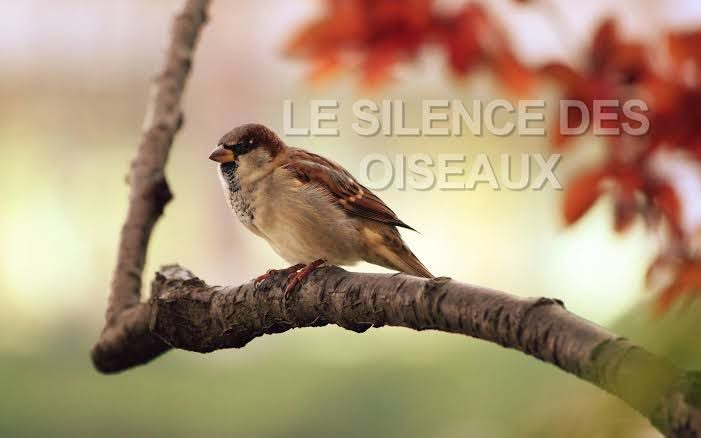

Le silence des oiseaux
Si, dans la nuit,
nos cris d’oiseaux s’éteignent,
c’est que le vent a mangé nos ailes
et que la lune a tourné le dos.
Vos mains chercheront des réponses
dans l’air vide.
Les pierres, comme toujours,
garderont le silence.
Si, dans la nuit,
nos cris d’oiseaux s’éteignent,
c’est que la mer a noyé le ciel
et que les étoiles ont soufflé leurs lampes.
Vos bouches se rempliront de poussière,
vos doigts gratteront la terre
pour y trouver un écho —
il ne viendra pas.
Vous mendierez aux ombres
et elles vous rendront
le froid et la mémoire du vide.
Si, dans la nuit,
nos cris d’oiseaux s’éteignent,
c’est que le ciel a fermé ses portes
et que les vents ont tranché nos voix.
Alors les arbres se pencheront
pour écouter votre peur,
la lune voilée descendra boire vos rêves.
Vous marcherez pieds nus dans la poussière,
portant les débris d’un matin
qui n’est jamais venu.
Les pierres mortes diront :
« Il n’y a plus de retour. »
Vous irez vers l’est, vers l’ouest,
mais les horizons reculeront.
Vous chercherez la lumière dans l’eau noire,
mais l’eau ne reflétera rien.
Nous étions les gardiens de l’aube,
les messagers des saisons.
Nous connaissions le fil secret
qui relie la pluie à vos mains.
Si, dans la nuit,
nos cris d’oiseaux s’éteignent,
les champs resteront nus,
les rivières perdront leur chemin,
et vos enfants ne connaîtront pas
la lumière douce du matin.
Vous frapperez aux portes du vent,
aux portes de la pierre,
aux portes de la mémoire —
aucune ne s’ouvrira.
Alors vous marcherez longtemps,
portant dans vos mains vides
l’écho d’un cri qui n’existe plus.
Et la pierre dira :
« Vous êtes arrivés trop tard. »
Djamel Metref
At Yenni le 26 août 2025

← Tous les poèmes